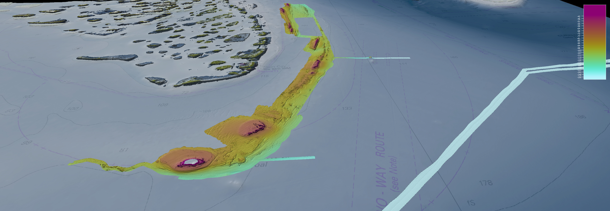
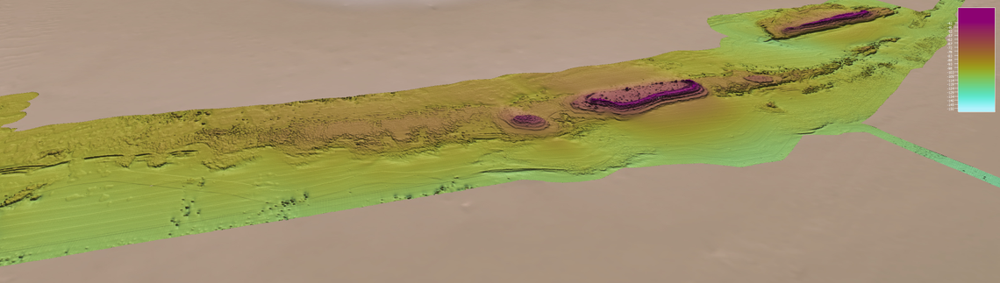

“Someone just offers you her home, an island. You hesitate at
first, but then you see the blue and understand you are invited to
inhabit the island for a while, perhaps even for a longer period.
It is true that you can sense the sea. At first, it is
unthinkable, to perceive this island as a real island in the
Pacific, but then it appears. Do you know how the curve of the
earth was shaped? The same energy made this wonder. It is only
natural since this work— specifically conceived for Ocean Space,
for you—originates from impressions of the place where the artist
herself is from: Bougainville. You are invited to inhabit this
space and listen to the sounds that come like how the clouds are
pushed by the winds.”
Read more
Chus Martínez, Brochure for “The Soul Expanding Ocean #1: Taloi
Havini”
Hello, wanderer! You have landed at the digital shore of
The Soul Expanding Ocean #1: Taloi Havini.
The Soul Expanding Ocean #1: Taloi Havini.
Everything on this island revolves around an Answer to the Call.
Here is a welcome call for you.
Here is a welcome call for you.
Taloi Havini, "Answer to the Call" (2021), fragment: Kuakumba
Bird of Paradise (0:19)
Respond with your voice. Use it freely - sing, speak, shout, make
noise, laugh...
* Don't worry, you are not being recorded, so don't be afraid to sing 😉
* Don't worry, you are not being recorded, so don't be afraid to sing 😉
“We don’t have monuments in Bougainville, but we do have
structures [...] There is none of the monumentality that prevails
in the west. When things break down, we repair them. If nature
destroys a building, we make a new one. We build structures for
ceremonies, then burn them down. Monumental events in life have no
physical aftermath, but they remain in the collective
memory.”
Read more
Taloi Havini in “Deep listening — Taloi Havini conjures the sound
of her ancestors at Venice Biennale” by Caroline Roux in Financial
Times
Taloi Havini aboard the R/V Falkor as part of Schmidt Ocean
Institute's Artist-At-Sea Residency program.
“Answering the call of the ocean: Artist Taloi Havini explores
the sound of the sea”, an interview with Taloi Havini for France24
in April 2021.
Taloi Havini and Ben Hakalitz in conversation at the musician's
studio in Queensland about the composition of “Answer to the Call”
(2021).
Taloi Havini, "Answer to the Call" (2021), fragment: Ocarina
and Panpipe (0:27)
Taloi Havini, "Answer to the Call" (2021), fragment: Ocean
Meditation (0:29)
“Within the sonic installation are textures of all kinds of
sounds that relate to activities that take you on a journey across
the oceans and below sea-level, right down to the twilight zone,
and then back up into the atmosphere – it’s all about the
interconnectedness of ocean/life systems.”
Read more
Taloi Havini in “Taloi Havini’s first sonic work dunks the
listener in an ocean of sound” by Amah-Rose Abrams in
Wallpaper*
Taloi Havini on the process and inspiration behind the sound
installation “Answer to the Call” (2021).
“I think when we’re looking at our Pacific Island nations, one of
the things that holds us together is the body of ocean which we
know as the Pacific—also a name that’s come from somebody else.
That’s why it becomes crucial to look at the relationships we have
as Pacific Island people to this body of water—the largest
continent in the world.”
Read more
Latai Taumoepeau and Taloi Havini, “The Last Resort: A
Conversation”, e-flux Journal #112 - October 2020
Musician Ben Hakalitz introducing the traditional instruments and
musical heritage of Bougainville.
Bolivian musician Mario Celestino speaks about the wind
instruments used in “Answer to the Call” (2021).

Drone footage of Taloi Havini’s “Answer to the Call” (2021) at
Ocean Space, Venice, Italy.

Complete Falkor Coverage. Bathymetry data acquired in the
Southern Depths of the Great Barrier Reef survey, using multibeam
sonar systems (2020).

Photography of the Buka Passage and the airport in the south of
Buka Island. Fragment from the Habitat series by Taloi Havini
(2019).

Sediment sampling on the sea floor during the study of the Ice
Age Geology of the Great Barrier Reef (2020).
Sediment sampling aboard R/V Falkor during the study of the Ice
Age Geology of the Great Barrier Reef (2020).

Bathymetry data acquired in the Southern Depths of the Great
Barrier Reef survey, using multibeam sonar systems (2020).
Welcome to the island.
Thank you for your answer.
Now, you can dive into The Soul Expanding Ocean #1: Taloi Havini and the story of the artwork Answer to the Call (2021).
Thank you for your answer.
Now, you can dive into The Soul Expanding Ocean #1: Taloi Havini and the story of the artwork Answer to the Call (2021).
Tap on any of the 22 elements to see more.
Dear Wanderer, you have explored the entire
island. Thank you for your visit!
Don't forget – this island is a constantly evolving place, so make sure to check back for new offerings. See you soon!
Don't forget – this island is a constantly evolving place, so make sure to check back for new offerings. See you soon!